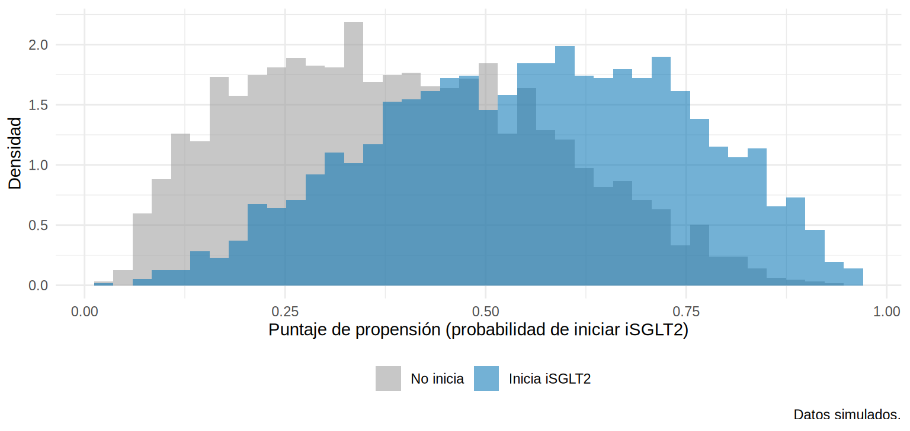
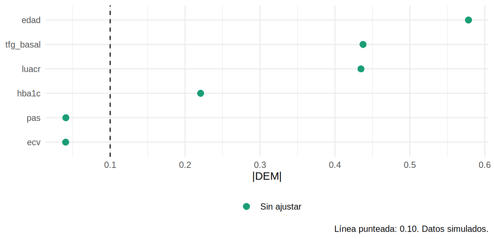

El puntaje de propensión (PS) es la probabilidad de recibir el tratamiento dado los confusores medidos:
\[
e(X) = P(A = 1 \mid X)
\]
Rosenbaum y Rubin (1983) demostraron que, dentro de pacientes con el mismo PS, los confusores medidos quedan balanceados entre tratados y no tratados: el PS es un resumen de todos los confusores en un solo número. Entonces se puede emparejar, ponderar o estratificar por el PS en lugar de por muchas variables.
Importante: el PS sirve para diseñar (equilibrar los grupos) sin mirar el desenlace. Es un análisis en dos etapas: (1) modelo del tratamiento y verificación del balance; (2) estimación del efecto.
Paso 1: estimar el PS
Se ajusta una regresión logística del tratamiento sobre los confusores (los de tu DAG):
library(tidyverse)source("R/funciones_epi.R")oraculo<-read_csv("Bases/ckd_isglt2_oraculo.csv")|>mutate(sexo =factor(sexo, levels =c("Mujer", "Hombre")), luacr =log(uacr), trat =factor(isglt2, levels =0:1, labels =c("No inicia", "Inicia iSGLT2")))ckd<-oraculo|>select(-fragilidad, -pendiente_0, -pendiente_1, -ite, -starts_with("evento_36m"))formula_ps<-isglt2~I(edad/10)+sexo+hba1c+pas+tfg_basal+luacr+ecvmodelo_ps<-glm(formula_ps, data =ckd, family =binomial)ckd$ps<-fitted(modelo_ps)summary(ckd$ps)
Min. 1st Qu. Median Mean 3rd Qu. Max.
0.0304 0.3100 0.4659 0.4700 0.6246 0.9648
Tip💡 Qué variables incluir en el modelo de PS
Sí: confusores (causas del tratamiento y del desenlace) y causas solo del desenlace (mejoran la precisión).
No: causas solo del tratamiento (instrumentos: aumentan la varianza y pueden amplificar el sesgo), mediadores y colisionadores.
Para variables continuas, incluye no linealidad (splines, términos cuadráticos) e interacciones plausibles si el balance no es bueno.
No uses el valor p para seleccionar variables ni evalúes el PS con “bondad de ajuste” o el AUC (un AUC alto implica poca superposición, no un mejor PS).
Paso 2: ¿hay solapamiento? (positividad)
Un PS útil requiere que ambos grupos tengan pacientes con PS comparables:
ggplot(ckd, aes(ps, fill =trat))+geom_histogram(aes(y =after_stat(density)), position ="identity", alpha =0.55, bins =40)+scale_fill_manual(values =c("No inicia"="#999999", "Inicia iSGLT2"="#0072B2"), name =NULL)+labs(x ="Puntaje de propensión (probabilidad de iniciar iSGLT2)", y ="Densidad", caption ="Datos simulados.")+theme_minimal(base_size =11)+theme(legend.position ="bottom")

Hay buen solapamiento en la zona central (0.2-0.8), con colas en que casi no hay tratados (PS bajo) o casi no hay no tratados (PS alto). Los pacientes en las colas se parecen poco a los del otro grupo: no hay contrafactual razonable.
Una práctica habitual es restringir el análisis a la región de solapamiento (por ejemplo, excluir PS < 0.05 o > 0.95, o fuera de los percentiles 2.5-97.5 del grupo tratado). Se define antes de ver el resultado y cambia el estimando (ahora es el efecto en la población comparable):
La prueba de que el PS funciona no es su AUC, sino que, al usarlo (emparejar, ponderar), los confusores queden balanceados. Antes de usarlo, medimos el desbalance crudo con las diferencias estandarizadas (DEM):
Las DEM crudas de edad (−0.58), TFGe (0.44) y albuminuria (0.43) superan por mucho el umbral de 0.10. En 12.4 y 12.5 veremos cómo desaparecen al emparejar o ponderar por el PS.
El gráfico de balance (love plot)
Un love plot resume el balance antes y después.
La función love_plot() está en R/funciones_epi.R (la cargamos con source()); recibe la base, las variables y, opcionalmente, listas de pesos para comparar el balance antes y después:
love_plot(ckd, vars)

Tres usos del PS
Uso
Cómo
Subcapítulo
Emparejamiento
Cada tratado se pareja con un no tratado de PS similar
12.4
Ponderación (IPW)
Cada paciente pesa \(1/P(\text{tratamiento recibido})\)
12.5
Estratificación
Se divide en quintiles de PS y se combinan
12.4
Covariable
Se incluye el PS en el modelo del desenlace
No recomendado (supone una forma lineal en el PS)
Advertencia⚠️ Lo que el PS no puede hacer
No resuelve la confusión no medida: solo equilibra lo medido. En nuestro ejemplo, el PS equilibrará perfectamente edad, TFGe y albuminuria, pero no la fragilidad.
Un PS “excelente” (muy buen balance) no es prueba de ausencia de sesgo.
La estimación depende de que el modelo de PS esté razonablemente bien especificado.
Importante🎯 En resumen
El PS es \(P(\text{tratamiento} \mid \text{confusores})\); equilibra los confusores medidos y permite diseñar sin mirar el desenlace.
Estímalo con una logística de los confusores (no instrumentos, mediadores ni colisionadores).
Solapamiento (histogramas) = positividad; recorta colas antes de ver los resultados.
La prueba del PS es el balance (DEM < 0.10) tras usarlo, no el AUC.
El PS no corrige confusión no medida.
Ejercicio
Agrega ns(tfg_basal, 3) y ns(luacr, 3) al modelo de PS. ¿Cambia la distribución del PS?
Excluye pacientes con PS < 0.10 o > 0.90 y recalcula las DEM crudas en la muestra recortada.
Calcula el AUC del modelo de PS (pROC::auc). ¿Un AUC alto es bueno o malo para este propósito? ¿Por qué?